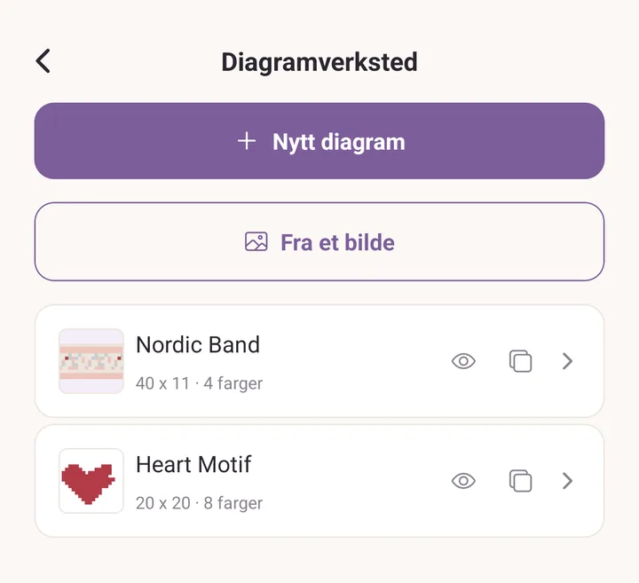
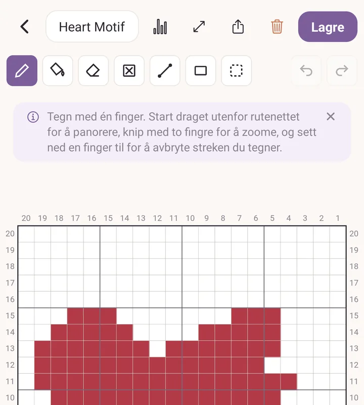
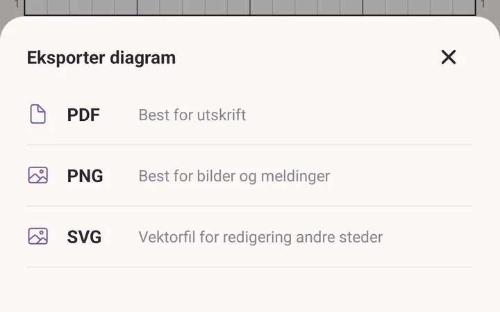

Diagramverksted
Tegn flerfargemønster på et rutenett, én rute per maske. Fair isle, pikselmotiver, graphgans, hekleruter, alt du ellers ville tegnet på rutepapir.
Et diagram du tegner her kan eksporteres til utskrift, legges til i en oppskrift, forhåndsvises som strikket stoff, eller følges maske for maske mens du lager det.
Slik åpner du det
Trykk Mer, og så Diagramverksted i bolken Verktøy.
Skjermen lister hvert diagram du har laget. Under I oppskriftene dine lister den også diagrammene som bor inne i oppskriftene dine, så alt du har tegnet er på ett sted.

Starte et diagram
- Trykk Nytt diagram.
- Skriv inn størrelsen: Masker (bredde) og Rader (høyde). Én rute er én maske.
- Trykk Opprett diagram.
Et diagram kan være opptil 400 ruter hver vei. Størrelsen er ikke låst for alltid: Endre størrelse øverst endrer den senere.
Vil du starte fra et bilde i stedet, trykk Fra et bilde. Den veien har sin egen gjennomgang i Lag et diagram.
Tegneverktøyene
Verktøyraden sitter over rutenettet.
- Blyant: mal én rute om gangen, eller dra for å male en rekke.
- Fyll: flommer et område med samme farge.
- Viskelær: tar fargen av igjen, og lar ruten stå tom.
- Ingen maske: merk ruter der strikkingen ikke arbeider noen maske i det hele tatt (se under).
- Linje: dra fra én rute til en annen for en rett rekke.
- Rektangel: dra ut en boks.
- Marker: tegn en boks rundt en del av diagrammet og arbeid bare på den delen.
Angre og Gjør om ligger til høyre i raden.

Med Marker aktiv dukker en rad nummer to opp: Kopier, Lim inn, Flytt, Speilvend sideveis, Speilvend opp og ned, Gjenta, Tøm ruter og Fjern markering. Gjenta legger markeringen side om side med feltene bortover, nedover og mellomrom, og så Bruk eller Avbryt.
Hver eneste av dem er én endring. Ett trykk på Angre tar hele speilvendingen eller hele gjentakelsen tilbake, ikke én rute av den.
Kopiering virker mellom diagrammer også. Kopier et motiv i ett diagram, åpne et annet, og Lim inn setter det der.
Flytte deg rundt på rutenettet
Disse fire bevegelsene er verdt å lære før noe annet.
- Én finger på rutenettet maler.
- Start draget utenfor rutenettet for å dra. Margen rundt diagrammet er håndtaket for å flytte papiret.
- Knip med to fingre for å zoome.
- Sett ned en finger til for å avbryte et strøk du er midt i. Strøket angres i stedet for å bli lagt igjen.
Start utenfor rutenettet for å dra. Knip hvor som helst for å zoome.
Tegner du med en penn, merker appen det: pennen tegner, en finger drar fra hvor som helst, og en hånd som hviler blir ignorert. Avslutt pennmodus dukker opp i verktøyraden for å gi tegningen tilbake til fingeren din.
Farger
Fargestripen går langs bunnen.
- Den første chipsen er Bakgrunn, fargen på hver rute du ikke har malt. Trykk på den for å endre den.
- Trykk på en farge for å velge den. Trykk på den valgte fargen igjen for å åpne Endre denne fargen, og så Bruk denne fargen for å ta den i bruk.
- Trykk + i enden av stripen for å legge til en farge. Et diagram kan romme opptil 20.
- Slett denne fargen spør Erstatt med først, og hver maske i den slettede fargen blir til den du velger.
Velgeren tilbyr de lagrede fargene dine og fargene som allerede ligger i garnstashen din, så et diagram kan tegnes i garnet du faktisk eier.
Ruter uten maske
Strikking blir smalere oppover: et bærestykke, en formet toppfelling, en vottetupp. Bruk Ingen maske til å male rutene der det ikke er noen maske å arbeide, så kan diagrammet si fra om det.
En rute uten maske er krysset over og blir aldri fylt med farge. Den blir stående krysset over i forhåndsvisningen, i det lille bildet på diagramlisten, og i hver eksport. Ingenting forskyver seg sideveis for å lukke hullet, så maskene du malte blir stående i de kolonnene du malte dem i.
Farger brukt
Diagramikonet øverst åpner Farger brukt: hvor mange masker hver farge dekker, som et antall og som en andel av hele diagrammet.
Bakgrunn (ikke fylt) telles også med, så tallet du leser er hvor mye av hvert garn stykket tar, hovedfargen inkludert.
Forhåndsvisning: diagrammet som stoff
Trykk Forhåndsvisning under rutenettet for å se diagrammet som stoff i stedet for som ruter.

Øverst, tre utseender: 3D, 2D og Diagram.
Under stoffet, masken: Strikk, eller hekleartene Fastmasker, Halvstaver, Staver og Hjørne til hjørne. Hver maske beholder sin egen fasthet, så å bytte mellom dem viser hver av dem i sine egne proporsjoner.
Så kontrollene:
- Fasthet per 10 cm, som M og Rader. For hjørne til hjørne leser den Ruter per 10 cm, Bortover og Nedover.
- Bakgrunn, fargen på rutene du ikke har malt.
- Gjenta diagrammet, Bortover og Nedover, for å se motivet lagt side om side slik det faktisk blir arbeidet.
- Forskyv, for å forskyve annenhver gjentakelse.
- Opp ned, for et diagram som arbeides ovenfra og ned.
Linjen nederst forteller deg omtrent hva stykket måler ved fastheten du skrev inn, gjentakelser inkludert. Det er som regel grunnen til å skrive inn en fasthet i det hele tatt.
Delingsikonet øverst åpner Forhåndsvisning som bilde: Del, Lagre på enheten på Android, og Legg til i oppskriftens bilder når diagrammet hører til en oppskrift.
Det du setter her huskes på diagrammet, så det åpner likedan neste gang.
Eksportere
Delingsikonet øverst i diagramredigeringen åpner Eksporter diagram:
- PDF, best til utskrift.
- PNG, best til bilder og meldinger.
- SVG, en vektorfil til redigering andre steder.

Alle tre har rad- og maskenumre på alle fire kanter, i den vanlige strikkeretningen: maske 1 til høyre, rad 1 nederst. På Android blir du spurt om du vil Lagre på enheten eller Del.
Diagrammer inne i en oppskrift
Et diagram trenger ikke stå alene.
- I en oppskrift du skriver, har bolken Fargediagrammer Legg til diagram for å tegne et nytt og Legg til et eksisterende diagram for å hente inn et fra diagramverkstedet.
- På diagramlisten er diagrammer som bor i oppskrifter gruppert under I oppskriftene dine. Redigerer du et der, lagres det tilbake i oppskriften sin.
Følge et diagram mens du strikker
Noen ganger er diagrammet hele oppskriften. Det finnes ingen skrevet instruksjon å lese, bare rutenettet.
- Gå til fanen Prosjekter og start et prosjekt.
- Under Oppskrift, trykk Velg oppskrift. Diagrammene dine står oppført ved siden av de skrevne oppskriftene og PDF-ene dine.
- Velg diagrammet, lagre, og bruk Åpne og spor.
Sporingen holder plassen din, rad for rad og maske for maske, og husker den mellom øktene. Et prosjekt kan romme mer enn ett diagram, til en forside, en bakside og et erme, og du bytter mellom dem uten å miste plassen i noen av dem.
Vil du følge et diagram som er trykt inne i en PDF-oppskrift i stedet, se PDF-verktøy.
Rydding
På diagramlisten har hver diagramrad et øyeikon for Forhåndsvisning og et kopiikon for Dupliser. Sveip en rad mot venstre for å avdekke Slett.
Et diagram som et prosjekt bruker som oppskriften sin kan ikke slettes. Appen navngir prosjektene i stedet, så du kan koble det fra der først.
Se også
- Lag et diagram: et diagram tegnet fra start til slutt, og et bilde gjort om til et diagram.
- Oppskrifter: diagrammer inne i en oppskrift du skriver.
- Prosjekter: å holde orden på det du lager.
- Stash: der stashfargene i velgeren kommer fra.